pacman::p_load(sf, sfdep, spdep, tmap, plotly, tidyverse, Kendall)Project 2
1. Objectives and Tasks
1.1 Objectives
Tourism is one of Thailand’s largest industries, accounting for some 20% of the gross domestic product (GDP). In 2019, Thailand earned 90 billion USD from domestic and international tourism, but the COVID-19 pandemic caused revenues to crash to 24 billion USD in 2020. However, it is important to note that the tourism economy of Thailand are not evenly distributed.
We are interested to discover:
- If the key indicators of tourism economy of Thailand are independent from space and space and time.
- If the tourism economy is indeed spatial and spatio-temporal dependent, then, we would like to detect where are the clusters and outliers, and the emerging hot spot/cold spot areas.
1.2 The Tasks
The specific tasks of this take-home exercise are as follows:
- Using appropriate function of
sfandtidyverse, preparing the following geospatial data layer:- a study area layer in sf polygon features. It must be at province level (including Bangkok) of Thailand.
- a tourism economy indicators layer within the study area in sf polygon features.
- a derived tourism economy indicator layer in spacetime s3 class of
sfdep. Keep the time series at month and year levels.
- Using the extracted data, perform global spatial autocorrelation analysis by using
sfdepmethods. - Using the extracted data, perform local spatial autocorrelation analysis by using
sfdepmethods. - Using the extracted data, perform emerging hotspot analysis by using
sfdepmethods. - Describe the spatial patterns revealed by the analysis above.
1.3 The packages
2. The data
2.1 Importing the raw data
For the purpose of this take-home exercise, two data sets shall be used, they are:
Thailand Domestic Tourism Statistics at Kaggle. We are required to use version 2 of the data set.
Thailand - Subnational Administrative Boundaries at HDX. We are required to use the province boundary data set.
The code chunk below is used to import Thailand - Subnational Administrative Boundaries as well as filtering out the region of study which is the Bangkok Metropolitan Region BMR and converting the projected coordinate system of data to WGS 84 / UTM zone 47N and the EPSG code is 32647 to create THSAB_sf
THSAB_sf <- st_read(dsn = "data/geo",
layer = "tha_admbnda_adm1_rtsd_20220121") %>%
st_transform(crs = 32647)Reading layer `tha_admbnda_adm1_rtsd_20220121' from data source
`C:\Users\tien_\OneDrive\SMU\haductien1211\Portfolio\R-GAA\Project02\data\geo'
using driver `ESRI Shapefile'
Simple feature collection with 77 features and 16 fields
Geometry type: MULTIPOLYGON
Dimension: XY
Bounding box: xmin: 97.34336 ymin: 5.613038 xmax: 105.637 ymax: 20.46507
Geodetic CRS: WGS 84This code chunk is to import Thailand Domestic Tourism Statistics data and create tourism.
In the below code I will also create 2 new columns for the Month and Year separately for the purpose of using them for later analysis as well as converting the province_thai column name to ADM1_TH for the purpose of left-joining with the GEO data later and removing the date column as the 2 new Month and Year column are already created.
tourism <- read_csv("data/non-geo/thailand_domestic_tourism_2019_2023_ver2.csv") %>%
mutate(`month` = as.numeric(format(as.Date(`date`), "%m"))) %>%
mutate(`year` = as.numeric(format(as.Date(`date`), "%Y"))) %>%
rename(`ADM1_TH` = `province_thai`) %>%
select(2:9)2.2 Data exploration and wrangling
2.2.1 The GEO data
Let first look at what we have for the provinces
tm_shape(THSAB_sf) +
tm_polygons() +
tm_text("ADM1_EN", size=0.5)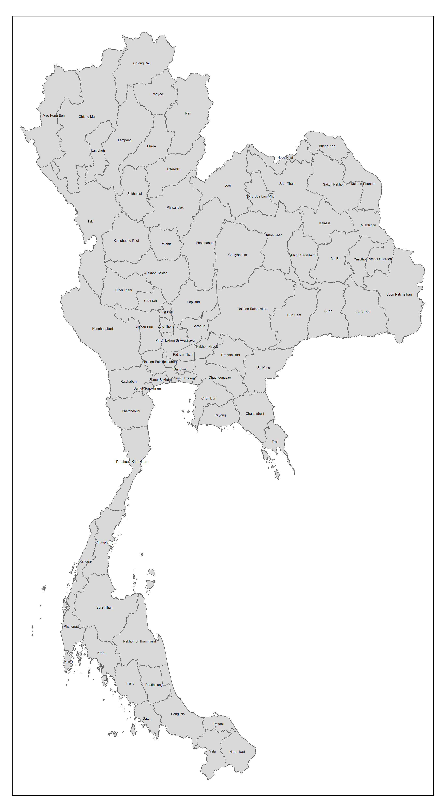
Since most of the analysis that I would be doing later involved (QUEEN) contiguity weight matrix computation I am curious to see if there was any problem with the computation such as geo location without any neigbors or missing links
The code chunk below is to compute Queen contiguity weight matrix
thai_wm_q <- poly2nb(THSAB_sf, queen=TRUE)The code below is to quickly review the summary of the results
summary(thai_wm_q)Neighbour list object:
Number of regions: 77
Number of nonzero links: 352
Percentage nonzero weights: 5.93692
Average number of links: 4.571429
1 region with no links:
67
2 disjoint connected subgraphs
Link number distribution:
0 1 2 3 4 5 6 7 8 9
1 1 5 17 15 17 10 5 4 2
1 least connected region:
14 with 1 link
2 most connected regions:
29 51 with 9 linksInteresting there was 1 region with no links, this mean the Queen contiguity weight matrix computation later needs some adjustments
Review the thai_wm_q data itselft I know that the problematic province is 67. The same could be seen using the code below
thai_wm_q[[67]][1] 0Let check which one are they using the code below
THSAB_sf$ADM1_EN[67][1] "Phuket"Now let’s try to visualise this on a contiguity based neighbours connectivity graph.
To get our longitude values we map the st_centroid function over the geometry column of us.bound and access the longitude value through double bracket notation [[]] and
- This allows us to get only the longitude, which is the first value in each centroid.
- We do the same for latitude with one key difference. We access the second value per each centroid with [[2]].
- Now that we have latitude and longitude, we use cbind to put longitude and latitude into the same object.
longitude <- map_dbl(THSAB_sf$geometry, ~st_centroid(.x)[[1]])
latitude <- map_dbl(THSAB_sf$geometry, ~st_centroid(.x)[[2]])
coords <- cbind(longitude, latitude)The code below is to plot Queen contiguity based neighbours connectivity map
plot(THSAB_sf$geometry, border="lightgrey")
plot(thai_wm_q, coords, pch = 19, cex = 0.6, add = TRUE, col= "red")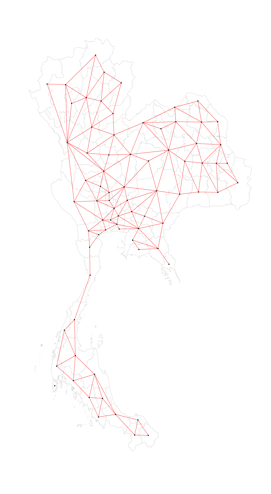
Note
We could see that Phuket is disjoint from the rest of the neighbors (bottom left region), hence during the Queen computation a snap argument would most likely need to be used to resolve this. Therefore, I’ll be using a snap value of 400 in the Queen computation of neigbors moving forward
Let rerun the code with snap = 400 and see the results using the code below
thai_wm_q <- poly2nb(THSAB_sf, queen=TRUE, snap = 400)plot(THSAB_sf$geometry, border="lightgrey")
plot(thai_wm_q, coords, pch = 19, cex = 0.6, add = TRUE, col= "red")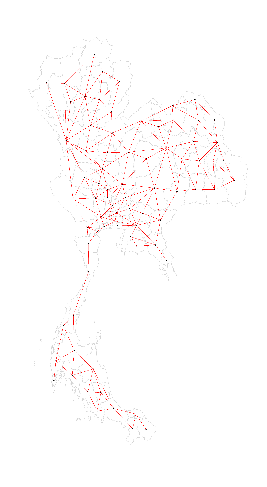
The issue with disjointed Phuket seems to be resolved
2.2.2 The tourism data
This code below is to explore the different variable or indicator available in the data
unique(tourism$variable)[1] "ratio_tourist_stay" "no_tourist_stay" "no_tourist_all"
[4] "no_tourist_thai" "no_tourist_foreign" "revenue_all"
[7] "revenue_thai" "revenue_foreign" There seems to be 8 different variable for analysis in this case, for the purpose of this study I’ll be focusing on Revenue mostly, mainly revenue_foreign the revenue from Foreign Tourist and if we have the opportunity, diving into other variable including revenue_foreign and revenue_all. The reason for this change is because majority of revenue of Thai Tourism is from Foreign visitors and therefore the impact of Covid 19 to this maybe more significant. In addition the study will look more into the changes over the year period
First is to get all the data filter out using the specific revenue variable for the analysis. To create 3 new table tourism_revenue_thai, tourism_revenue_foreign, tourism_revenue_all, the data would have its Month and Year columns intact useful for later study into changes over the Month
tourism_revenue_thai <- tourism %>%
filter(variable == 'revenue_thai')
tourism_revenue_foreign <- tourism %>%
filter(variable == 'revenue_foreign')
tourism_revenue_all <- tourism %>%
filter(variable == 'revenue_all')For study into changes over the year, I will do a sum of revenue over the year and create 3 new table revenue_thai_year, revenue_foreign_year, revenue_all_year, using the group_by and summarise. One of the thing I notice during my reviewing of the data is that it would only go up to February of 2023 hence grouping and summing them that include 2023 would create disparity in the data hence for the year data study I would only consider from 2019 to 2022 and omitting the 2023 period.
The code below is used to do all the above
revenue_thai_year <- tourism_revenue_thai %>%
select(1:8) %>%
group_by(year, ADM1_TH, province_eng) %>%
summarise(sum_rev = sum(value)) %>%
filter(!year == 2023) %>%
ungroup()
revenue_foreign_year <- tourism_revenue_foreign %>%
select(1:8) %>%
group_by(year, ADM1_TH, province_eng) %>%
summarise(sum_rev = sum(value)) %>%
filter(!year == 2023) %>%
ungroup()
revenue_all_year <- tourism_revenue_all %>%
select(1:8) %>%
group_by(year, ADM1_TH, province_eng) %>%
summarise(sum_rev = sum(value)) %>%
filter(!year == 2023) %>%
ungroup()ggplot(data = revenue_foreign_year,
aes(sum_rev,
fct_reorder(province_eng, sum_rev))) +
geom_col()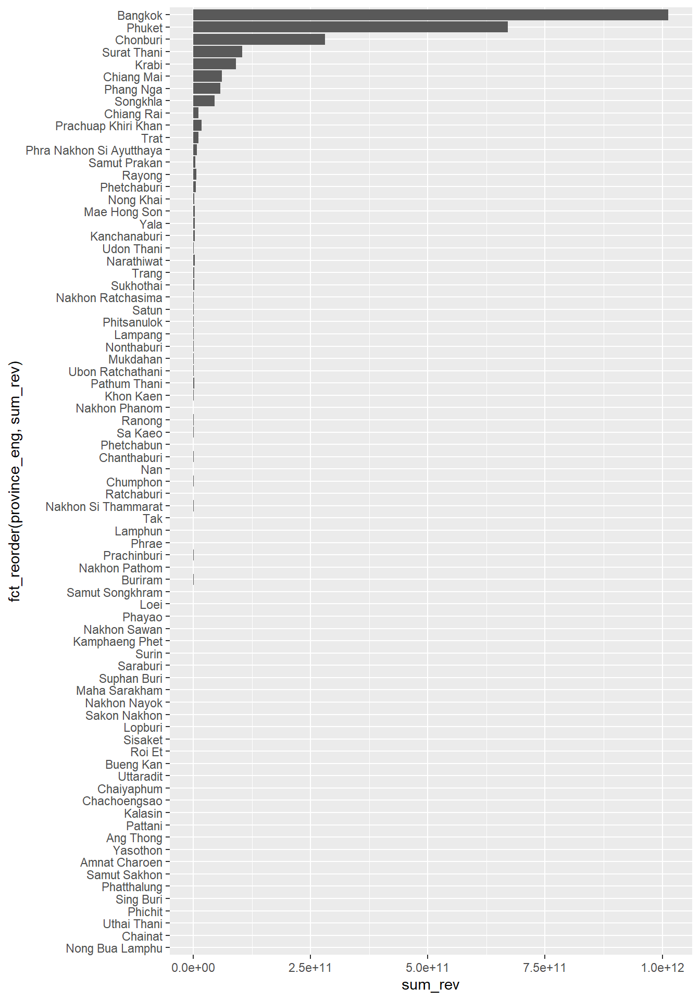
3. The analysis
3.1 Visualising Foreign Revenue Indicator
First I want to merge the yearly foreign revenue table revenue_foreign_year with the GEO data THSAB_sf for easier analysis later. This is done using the code below
revenue_foreign <- revenue_foreign_year %>%
left_join(THSAB_sf) %>%
select(1:2,4, 7, 20)Before we start the analysis let create a spactime data revenue_foreign_st using revenue_foreign for the purpose of study later
revenue_foreign_st <- spacetime(revenue_foreign,
THSAB_sf,
.loc_col = "ADM1_EN",
.time_col = "year")For the basic visualization I would still want to see if there are any potential cluster and I want to see the changes of Foreign Revenue cluster over the year. Hence for this purpose I would plot 4 graph using the data extract from revenue_foreign_2019. Therefore I will be using bclust style which is a good combination between kmeans and hclust to fill the data
revenue_foreign_2019 <- revenue_foreign %>%
filter(year == 2019)
revenue_foreign_2020 <- revenue_foreign %>%
filter(year == 2020)
revenue_foreign_2021 <- revenue_foreign %>%
filter(year == 2021)
revenue_foreign_2022 <- revenue_foreign %>%
filter(year == 2022)
RF2019 <- tm_shape(st_as_sf(revenue_foreign_2019)) +
tm_fill("sum_rev",
n = 5,
palette="Greens",
style = "bclust",
title = "Foreign Revenue 2019") +
tm_borders(alpha = 0.5) +
tm_layout(main.title = "Distribution of Foreign Revenue 2019")+
tm_text("ADM1_EN", size=0.4)
RF2020 <- tm_shape(st_as_sf(revenue_foreign_2020)) +
tm_fill("sum_rev",
n = 5,
palette="Greens",
style = "bclust",
title = "Foreign Revenue 2020") +
tm_borders(alpha = 0.5) +
tm_layout(main.title = "Distribution of Foreign Revenue 2020")+
tm_text("ADM1_EN", size=0.4)
RF2021 <- tm_shape(st_as_sf(revenue_foreign_2021)) +
tm_fill("sum_rev",
n = 5,
palette="Greens",
style = "bclust",
title = "Foreign Revenue 2021") +
tm_borders(alpha = 0.5) +
tm_layout(main.title = "Distribution of Foreign Revenue 2021")+
tm_text("ADM1_EN", size=0.4)
RF2022 <- tm_shape(st_as_sf(revenue_foreign_2022)) +
tm_fill("sum_rev",
n = 5,
palette="Greens",
style = "bclust",
title = "Foreign Revenue 2022") +
tm_borders(alpha = 0.5) +
tm_layout(main.title = "Distribution of Foreign Revenue 2022")+
tm_text("ADM1_EN", size=0.4)tmap_arrange(RF2019, RF2020, RF2021, RF2022, asp=1, ncol=4)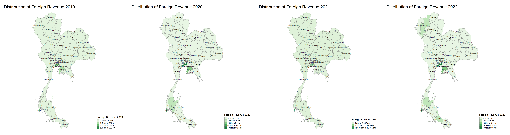
Committee Member: 1(1) 2(1) 3(1) 4(1) 5(1) 6(1) 7(1) 8(1) 9(1) 10(1)
Computing Hierarchical Clustering
Committee Member: 1(1) 2(1) 3(1) 4(1) 5(1) 6(1) 7(1) 8(1) 9(1) 10(1)
Computing Hierarchical Clustering
Committee Member: 1(1) 2(1) 3(1) 4(1) 5(1) 6(1) 7(1) 8(1) 9(1) 10(1)
Computing Hierarchical Clustering
Committee Member: 1(1) 2(1) 3(1) 4(1) 5(1) 6(1) 7(1) 8(1) 9(1) 10(1)
Computing Hierarchical Clustering3.2 Global Measures of Spatial Autocorrelation
I’ve previously created the Queen contiguity weight matrix thai_wm_q with snap = 400. Next we need to create Row-standardised weights matrix using the code below
thai_rswm_q <- nb2listw(thai_wm_q,
style="W",
zero.policy = TRUE)
thai_rswm_qCharacteristics of weights list object:
Neighbour list object:
Number of regions: 77
Number of nonzero links: 354
Percentage nonzero weights: 5.970653
Average number of links: 4.597403
Weights style: W
Weights constants summary:
n nn S0 S1 S2
W 77 5929 77 37.54724 320.7523.2.1 Computing Global Carlo Moran’s I
The code chunk below performs Moran’s I statistical testing using moran.test() of spdep. from 2019 to 2022
wm_q_2019 <- revenue_foreign_2019 %>%
# select(3:5) %>%
mutate(nb = st_contiguity(geometry, snap = 400),
wt = st_weights(nb,
style = "W",
allow_zero = TRUE),
.before = 1) wm_q_2020 <- revenue_foreign_2020 %>%
# select(3:5) %>%
mutate(nb = st_contiguity(geometry, snap = 400),
wt = st_weights(nb,
style = "W",
allow_zero = TRUE),
.before = 1) wm_q_2021 <- revenue_foreign_2021 %>%
# select(3:5) %>%
mutate(nb = st_contiguity(geometry, snap = 400),
wt = st_weights(nb,
style = "W",
allow_zero = TRUE),
.before = 1) wm_q_2022 <- revenue_foreign_2022 %>%
# select(3:5) %>%
mutate(nb = st_contiguity(geometry, snap = 400),
wt = st_weights(nb,
style = "W",
allow_zero = TRUE),
.before = 1) 2019
global_moran_perm(wm_q_2019$sum_rev,
wm_q_2019$nb,
wm_q_2019$wt,
nsim = 999)
Monte-Carlo simulation of Moran I
data: x
weights: listw
number of simulations + 1: 1000
statistic = -0.0065291, observed rank = 751, p-value = 0.498
alternative hypothesis: two.sided2020
global_moran_perm(wm_q_2020$sum_rev,
wm_q_2020$nb,
wm_q_2020$wt,
nsim = 999)
Monte-Carlo simulation of Moran I
data: x
weights: listw
number of simulations + 1: 1000
statistic = 0.0044982, observed rank = 788, p-value = 0.424
alternative hypothesis: two.sided2021
global_moran_perm(wm_q_2021$sum_rev,
wm_q_2021$nb,
wm_q_2021$wt,
nsim = 999)
Monte-Carlo simulation of Moran I
data: x
weights: listw
number of simulations + 1: 1000
statistic = 0.011613, observed rank = 942, p-value = 0.116
alternative hypothesis: two.sided2022
global_moran_perm(wm_q_2022$sum_rev,
wm_q_2022$nb,
wm_q_2022$wt,
nsim = 999)
Monte-Carlo simulation of Moran I
data: x
weights: listw
number of simulations + 1: 1000
statistic = -0.020738, observed rank = 691, p-value = 0.618
alternative hypothesis: two.sidedAnother way to do this is using the below test method code chunk since we already have the listw of thai_rswm_q
set.seed(1234)
bperm_2019 = moran.mc(revenue_foreign_2019$sum_rev,
listw=thai_rswm_q,
nsim=999,
zero.policy = TRUE,
na.action=na.omit)
bperm_2019
Monte-Carlo simulation of Moran I
data: revenue_foreign_2019$sum_rev
weights: thai_rswm_q
number of simulations + 1: 1000
statistic = 0.024516, observed rank = 862, p-value = 0.138
alternative hypothesis: greaterset.seed(1234)
bperm_2020 = moran.mc(revenue_foreign_2020$sum_rev,
listw=thai_rswm_q,
nsim=999,
zero.policy = TRUE,
na.action=na.omit)
bperm_2020
Monte-Carlo simulation of Moran I
data: revenue_foreign_2020$sum_rev
weights: thai_rswm_q
number of simulations + 1: 1000
statistic = 0.027343, observed rank = 879, p-value = 0.121
alternative hypothesis: greaterset.seed(1234)
bperm_2021 = moran.mc(revenue_foreign_2021$sum_rev,
listw=thai_rswm_q,
nsim=999,
zero.policy = TRUE,
na.action=na.omit)
bperm_2021
Monte-Carlo simulation of Moran I
data: revenue_foreign_2021$sum_rev
weights: thai_rswm_q
number of simulations + 1: 1000
statistic = -0.014846, observed rank = 855, p-value = 0.145
alternative hypothesis: greaterset.seed(1234)
bperm_2022 = moran.mc(revenue_foreign_2022$sum_rev,
listw=thai_rswm_q,
nsim=999,
zero.policy = TRUE,
na.action=na.omit)
bperm_2022
Monte-Carlo simulation of Moran I
data: revenue_foreign_2022$sum_rev
weights: thai_rswm_q
number of simulations + 1: 1000
statistic = -0.015294, observed rank = 799, p-value = 0.201
alternative hypothesis: greater
Tip
All the test over the year from 2019-2022 indicate that p-value > 0.05 hence the null hypothesis are not rejected
3.2.2 Visualising Global Moran’s I
The code chunk below is used to plot a histogram of Simulated Moran’s I
hist(bperm_2019$res,
freq=TRUE,
breaks=20,
xlab="Foreign Revenue 2019 Simulated Moran's I")
abline(v=0,
col="red") 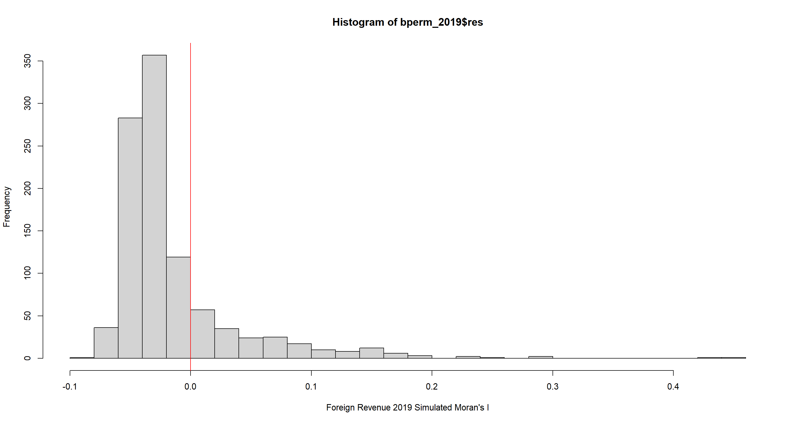
hist(bperm_2020$res,
freq=TRUE,
breaks=20,
xlab="Foreign Revenue 2020 Simulated Moran's I")
abline(v=0,
col="red") 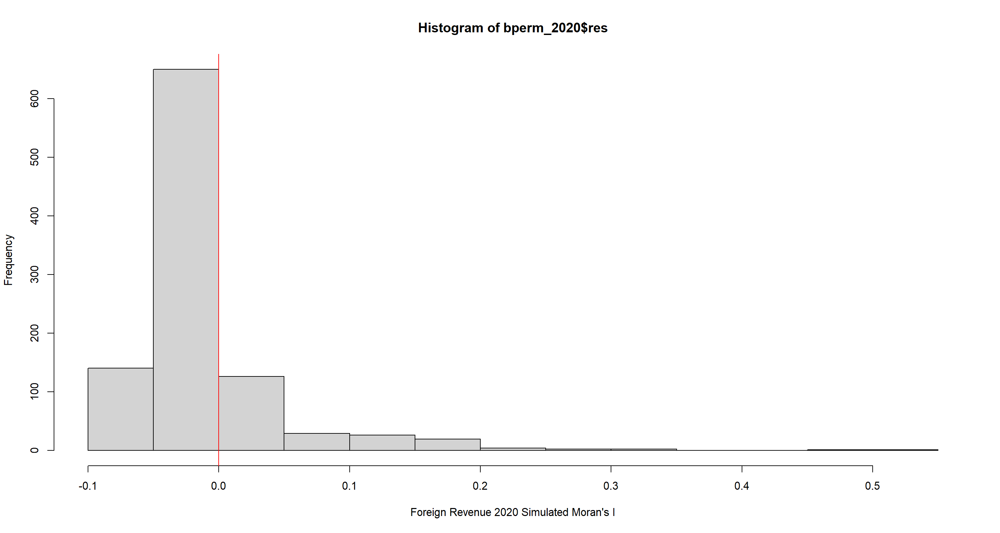
hist(bperm_2021$res,
freq=TRUE,
breaks=20,
xlab="Foreign Revenue 2021 Simulated Moran's I")
abline(v=0,
col="red") 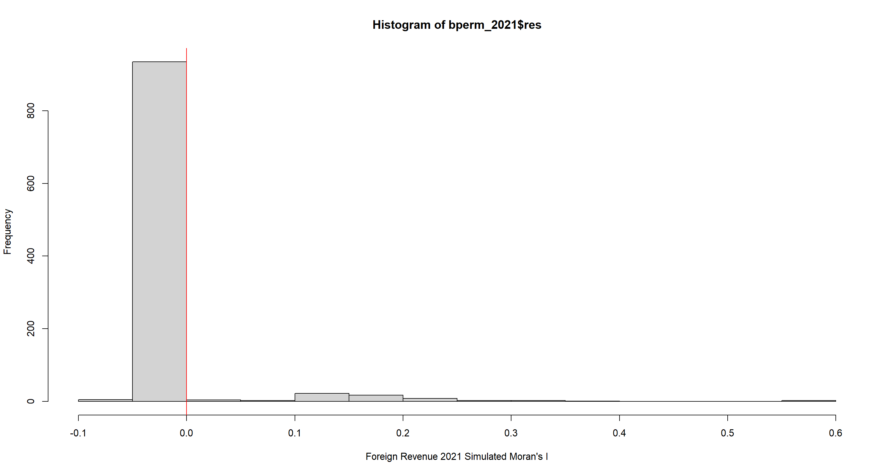
hist(bperm_2022$res,
freq=TRUE,
breaks=20,
xlab="Foreign Revenue 2022 Simulated Moran's I")
abline(v=0,
col="red") 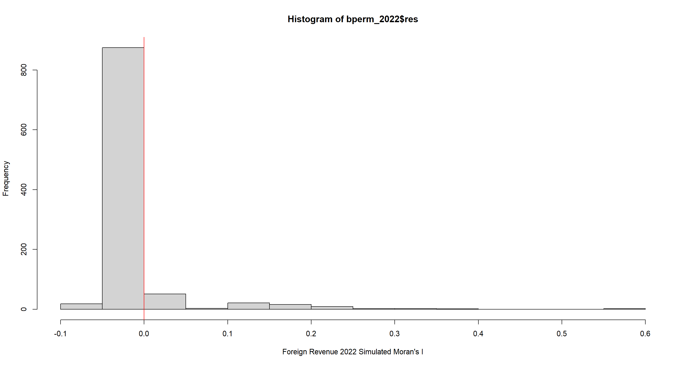
MI_corr_2019 <- sp.correlogram(thai_wm_q,
revenue_foreign_2019$sum_rev,
order=6,
method="I",
style="W")
plot(MI_corr_2019)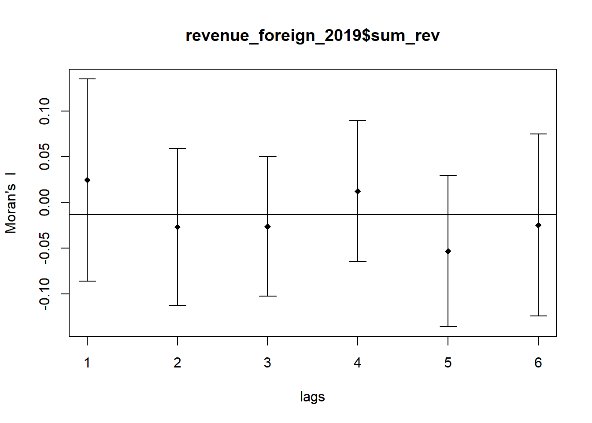
MI_corr_2020 <- sp.correlogram(thai_wm_q,
revenue_foreign_2020$sum_rev,
order=6,
method="I",
style="W")
plot(MI_corr_2020)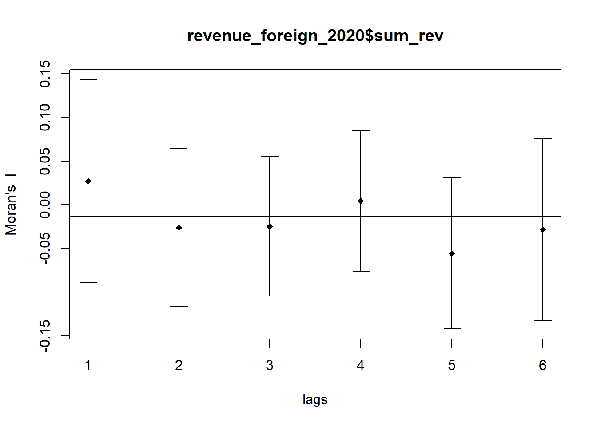
MI_corr_2021 <- sp.correlogram(thai_wm_q,
revenue_foreign_2021$sum_rev,
order=6,
method="I",
style="W")
plot(MI_corr_2021)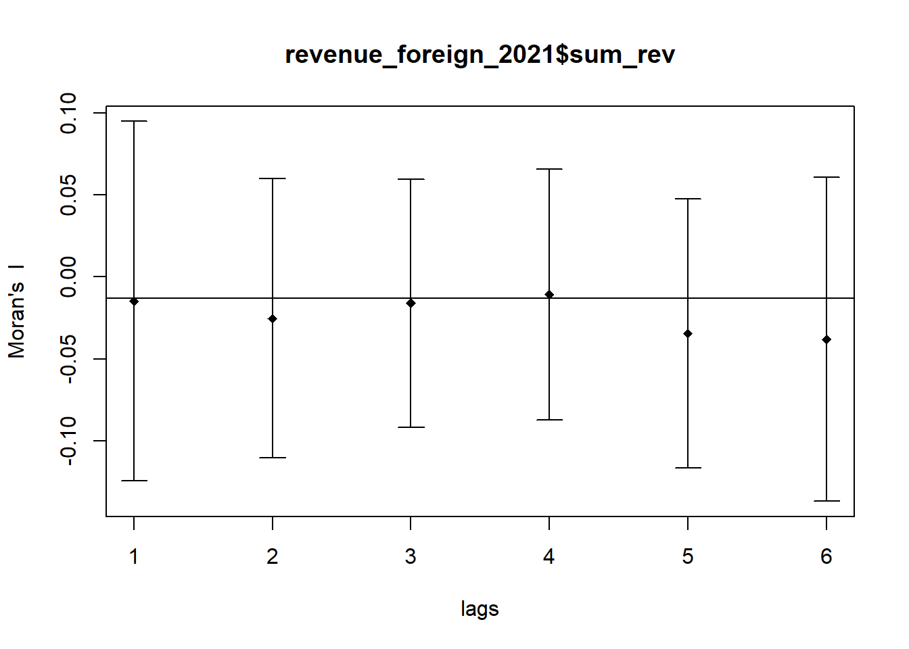
MI_corr_2022 <- sp.correlogram(thai_wm_q,
revenue_foreign_2022$sum_rev,
order=6,
method="I",
style="W")
plot(MI_corr_2022)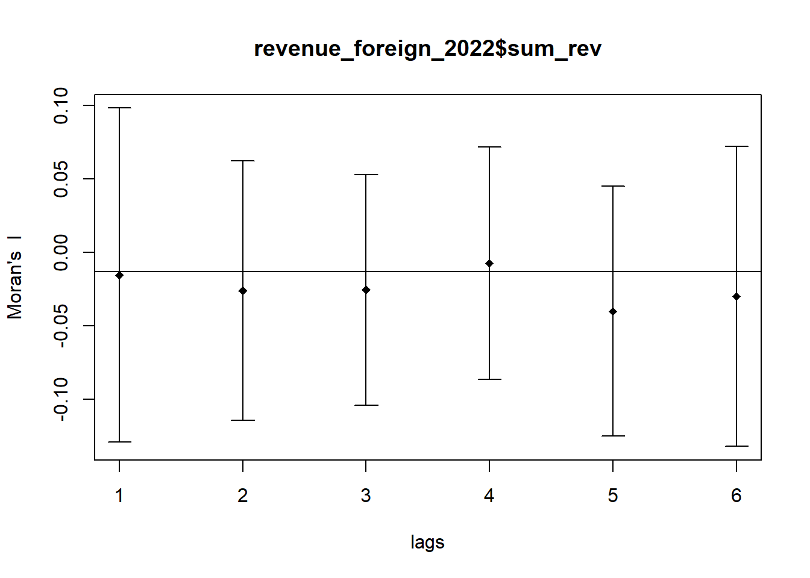
3.2.3 Computing local Moran’s I
Using the above created wm_q data, we could create the LISA Map and visualizaing the local Moran’s I. The below code is used to create the lisa mapping for Local Moran’s I of Foreign revenue at Province level by using local_moran() of sfdep package.
lisa_2019 <- wm_q_2019 %>%
mutate(local_moran = local_moran(sum_rev,
nb,
wt,
nsim = 99),
.before = 1) %>%
unnest(local_moran)lisa_2020 <- wm_q_2020 %>%
mutate(local_moran = local_moran(sum_rev,
nb,
wt,
nsim = 99),
.before = 1) %>%
unnest(local_moran)lisa_2021 <- wm_q_2021 %>%
mutate(local_moran = local_moran(sum_rev,
nb,
wt,
nsim = 99),
.before = 1) %>%
unnest(local_moran)lisa_2022 <- wm_q_2022 %>%
mutate(local_moran = local_moran(sum_rev,
nb,
wt,
nsim = 99),
.before = 1) %>%
unnest(local_moran)3.2.4 Visualising local Moran’s I
Visualising local Moran’s I and p-value for each year
tmap_mode("plot")
map2019_1<- tm_shape(st_as_sf(lisa_2019)) +
tm_fill("ii") +
tm_borders(alpha = 0.5) +
tm_view(set.zoom.limits = c(6,8)) +
tm_layout(
main.title = "local Moran's I of Foreign Revenue 2019",
main.title.size = 2) +
tm_text("ADM1_EN", size=0.5)
map2019_2 <- tm_shape(st_as_sf(lisa_2019)) +
tm_fill("p_ii",
breaks = c(0, 0.001, 0.01, 0.05, 1),
labels = c("0.001", "0.01", "0.05", "Not sig")) +
tm_borders(alpha = 0.5) +
tm_layout(main.title = "p-value of local Moran's I",
main.title.size = 2)+
tm_text("ADM1_EN", size=0.5)
tmap_arrange(map2019_1, map2019_2, ncol = 2)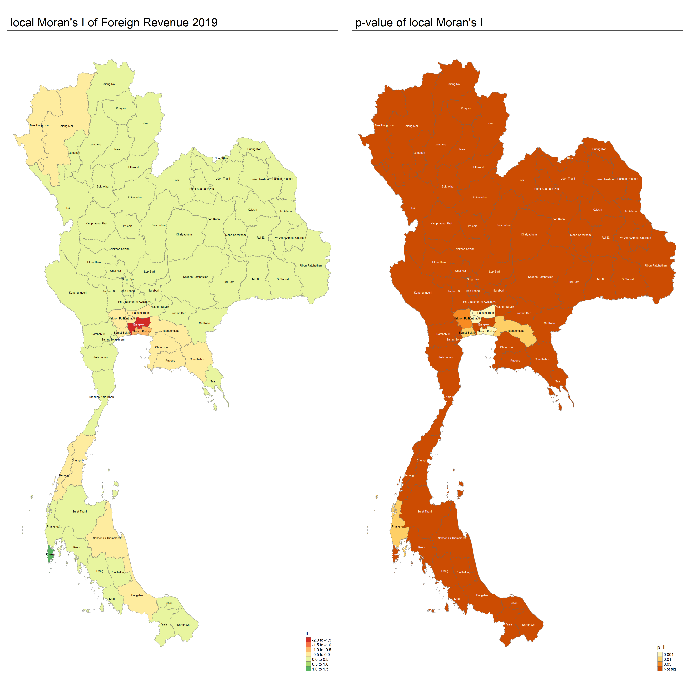
tmap_mode("plot")
map2020_1<- tm_shape(st_as_sf(lisa_2020)) +
tm_fill("ii") +
tm_borders(alpha = 0.5) +
tm_view(set.zoom.limits = c(6,8)) +
tm_layout(
main.title = "local Moran's I of Foreign Revenue 2020",
main.title.size = 2) +
tm_text("ADM1_EN", size=0.5)
map2020_2 <- tm_shape(st_as_sf(lisa_2020)) +
tm_fill("p_ii",
breaks = c(0, 0.001, 0.01, 0.05, 1),
labels = c("0.001", "0.01", "0.05", "Not sig")) +
tm_borders(alpha = 0.5) +
tm_layout(main.title = "p-value of local Moran's I",
main.title.size = 2)+
tm_text("ADM1_EN", size=0.5)
tmap_arrange(map2020_1, map2020_2, ncol = 2)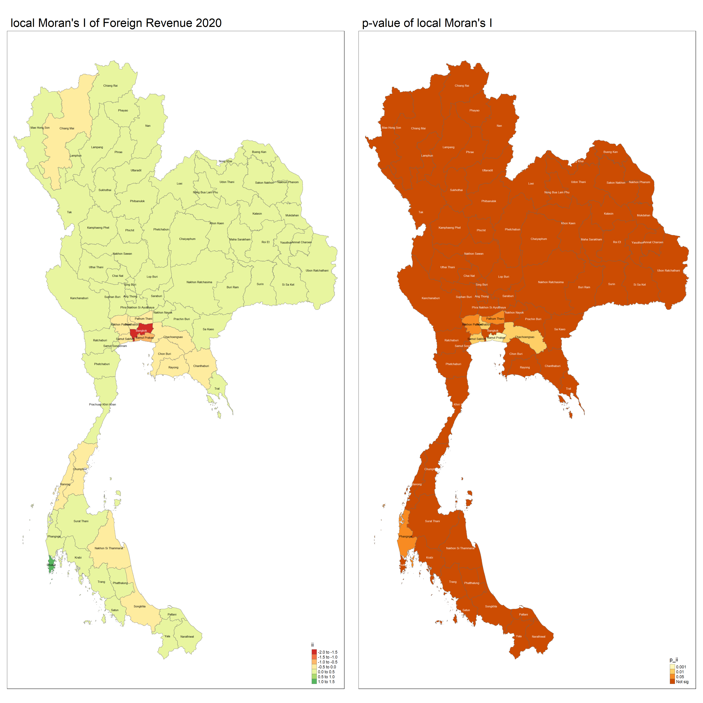
tmap_mode("plot")
map2021_1<- tm_shape(st_as_sf(lisa_2021)) +
tm_fill("ii") +
tm_borders(alpha = 0.5) +
tm_view(set.zoom.limits = c(6,8)) +
tm_layout(
main.title = "local Moran's I of Foreign Revenue 2021",
main.title.size = 2) +
tm_text("ADM1_EN", size=0.5)
map2021_2 <- tm_shape(st_as_sf(lisa_2021)) +
tm_fill("p_ii",
breaks = c(0, 0.001, 0.01, 0.05, 1),
labels = c("0.001", "0.01", "0.05", "Not sig")) +
tm_borders(alpha = 0.5) +
tm_layout(main.title = "p-value of local Moran's I",
main.title.size = 2)+
tm_text("ADM1_EN", size=0.5)
tmap_arrange(map2021_1, map2021_2, ncol = 2)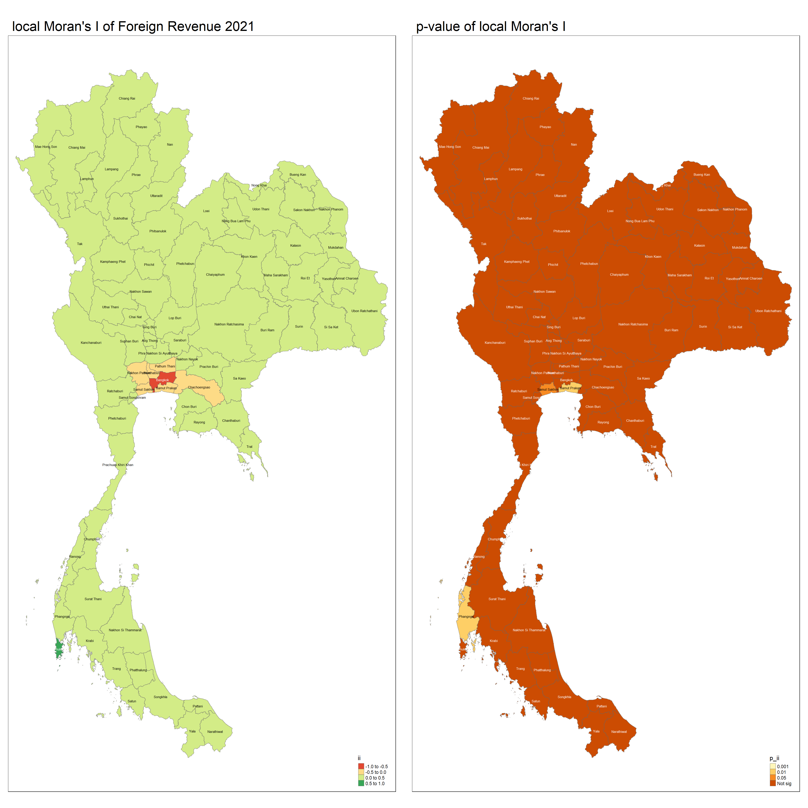
tmap_mode("plot")
map2022_1<- tm_shape(st_as_sf(lisa_2022)) +
tm_fill("ii") +
tm_borders(alpha = 0.5) +
tm_view(set.zoom.limits = c(6,8)) +
tm_layout(
main.title = "local Moran's I of Foreign Revenue 2022",
main.title.size = 2) +
tm_text("ADM1_EN", size=0.5)
map2022_2 <- tm_shape(st_as_sf(lisa_2022)) +
tm_fill("p_ii",
breaks = c(0, 0.001, 0.01, 0.05, 1),
labels = c("0.001", "0.01", "0.05", "Not sig")) +
tm_borders(alpha = 0.5) +
tm_layout(main.title = "p-value of local Moran's I",
main.title.size = 2)+
tm_text("ADM1_EN", size=0.5)
tmap_arrange(map2022_1, map2022_2, ncol = 2)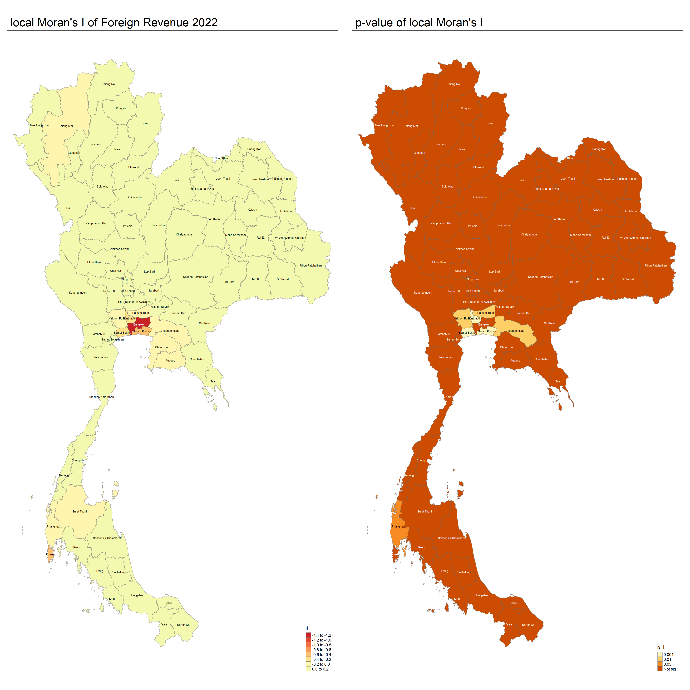
3.2.5 Plotting LISA map
In lisa sf data.frame, we can find three fields contain the LISA categories. They are mean, median and pysal. In general, classification in mean will be used as shown in the code chunk below.
lisa_sig_2019 <- lisa_2019 %>%
filter(p_ii_sim < 0.05)
lisa_map_2019 <- tm_shape(st_as_sf(lisa_2019)) +
tm_polygons() +
tm_borders(alpha = 0.5) +
tm_layout(
main.title = "LISA MAP 2019",
main.title.size = 2)+
tm_shape(st_as_sf(lisa_sig_2019)) +
tm_fill("mean") +
tm_borders(alpha = 0.4)+
tm_text("ADM1_EN", size=0.5)
lisa_sig_2020 <- lisa_2020 %>%
filter(p_ii_sim < 0.05)
lisa_map_2020 <- tm_shape(st_as_sf(lisa_2020)) +
tm_polygons() +
tm_borders(alpha = 0.5) +
tm_layout(
main.title = "LISA MAP 2020",
main.title.size = 2)+
tm_shape(st_as_sf(lisa_sig_2020)) +
tm_fill("mean") +
tm_borders(alpha = 0.4)+
tm_text("ADM1_EN", size=0.5)
lisa_sig_2021 <- lisa_2021 %>%
filter(p_ii_sim < 0.05)
lisa_map_2021 <- tm_shape(st_as_sf(lisa_2021)) +
tm_polygons() +
tm_borders(alpha = 0.5) +
tm_layout(
main.title = "LISA MAP 2021",
main.title.size = 2)+
tm_shape(st_as_sf(lisa_sig_2021)) +
tm_fill("mean") +
tm_borders(alpha = 0.4)+
tm_text("ADM1_EN", size=0.5)
lisa_sig_2022 <- lisa_2022 %>%
filter(p_ii_sim < 0.05)
lisa_map_2022 <- tm_shape(st_as_sf(lisa_2022)) +
tm_polygons() +
tm_borders(alpha = 0.5) +
tm_layout(
main.title = "LISA MAP 2022",
main.title.size = 2)+
tm_shape(st_as_sf(lisa_sig_2022)) +
tm_fill("mean") +
tm_borders(alpha = 0.4)+
tm_text("ADM1_EN", size=0.5)tmap_mode("plot")
tmap_arrange(lisa_map_2019, lisa_map_2020, lisa_map_2021, lisa_map_2022, ncol = 4)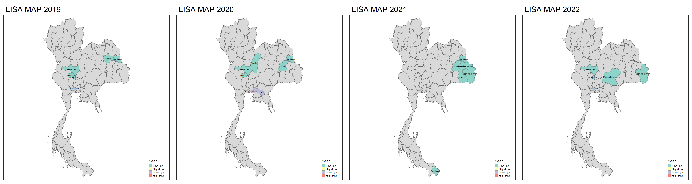
3.3 Hot Spot and Cold Spot Area Analysis (HCSA)
3.3.1 Computing local Gi* statistics
wm_idw_2019 <- revenue_foreign_2019 %>%
mutate(nb = include_self(st_contiguity(geometry, snap = 400)),
wts = st_inverse_distance(nb,
geometry,
scale = 1,
alpha = 1),
.before = 1)wm_idw_2020 <- revenue_foreign_2020 %>%
mutate(nb = include_self(st_contiguity(geometry, snap = 400)),
wts = st_inverse_distance(nb,
geometry,
scale = 1,
alpha = 1),
.before = 1)wm_idw_2021 <- revenue_foreign_2021 %>%
mutate(nb = include_self(st_contiguity(geometry, snap = 400)),
wts = st_inverse_distance(nb,
geometry,
scale = 1,
alpha = 1),
.before = 1)wm_idw_2022 <- revenue_foreign_2022 %>%
mutate(nb = include_self(st_contiguity(geometry, snap = 400)),
wts = st_inverse_distance(nb,
geometry,
scale = 1,
alpha = 1),
.before = 1)HCSA_2019 <- wm_idw_2019 %>%
mutate(local_Gi = local_gstar_perm(
sum_rev, nb, wts, nsim = 99),
.before = 1) %>%
unnest(local_Gi)HCSA_2020 <- wm_idw_2020 %>%
mutate(local_Gi = local_gstar_perm(
sum_rev, nb, wts, nsim = 99),
.before = 1) %>%
unnest(local_Gi)HCSA_2021 <- wm_idw_2021 %>%
mutate(local_Gi = local_gstar_perm(
sum_rev, nb, wts, nsim = 99),
.before = 1) %>%
unnest(local_Gi)HCSA_2022 <- wm_idw_2022 %>%
mutate(local_Gi = local_gstar_perm(
sum_rev, nb, wts, nsim = 99),
.before = 1) %>%
unnest(local_Gi)HCSA_sig_2019 <- HCSA_2019 %>%
filter(p_sim < 0.05)
HCSA_sig_2020 <- HCSA_2020 %>%
filter(p_sim < 0.05)
HCSA_sig_2021 <- HCSA_2021 %>%
filter(p_sim < 0.05)
HCSA_sig_2022 <- HCSA_2022 %>%
filter(p_sim < 0.05)tmap_mode("plot")
HCSA_map_2019 <- tm_shape(st_as_sf(HCSA_2019)) +
tm_polygons() +
tm_borders(alpha = 0.5) +
tm_layout(main.title = "Hot Spot and Cold Spot Area Analysis 2019",
main.title.size = 2)+
tm_shape(st_as_sf(HCSA_sig_2019)) +
tm_fill("cluster") +
tm_borders(alpha = 0.4) +
tm_text("ADM1_EN", size=0.5)
HCSA_map_2020 <- tm_shape(st_as_sf(HCSA_2020)) +
tm_polygons() +
tm_borders(alpha = 0.5) +
tm_layout(main.title = "Hot Spot and Cold Spot Area Analysis 2020",
main.title.size = 2)+
tm_shape(st_as_sf(HCSA_sig_2020)) +
tm_fill("cluster") +
tm_borders(alpha = 0.4) +
tm_text("ADM1_EN", size=0.5)
HCSA_map_2021 <- tm_shape(st_as_sf(HCSA_2021)) +
tm_polygons() +
tm_borders(alpha = 0.5) +
tm_layout(main.title = "Hot Spot and Cold Spot Area Analysis 2021",
main.title.size = 2)+
tm_shape(st_as_sf(HCSA_sig_2021)) +
tm_fill("cluster") +
tm_borders(alpha = 0.4) +
tm_text("ADM1_EN", size=0.5)
HCSA_map_2022 <- tm_shape(st_as_sf(HCSA_2022)) +
tm_polygons() +
tm_borders(alpha = 0.5) +
tm_layout(main.title = "Hot Spot and Cold Spot Area Analysis 2022",
main.title.size = 2)+
tm_shape(st_as_sf(HCSA_sig_2022)) +
tm_fill("cluster") +
tm_borders(alpha = 0.4) +
tm_text("ADM1_EN", size=0.5)
tmap_arrange(HCSA_map_2019, HCSA_map_2020, HCSA_map_2021, HCSA_map_2022, ncol = 4)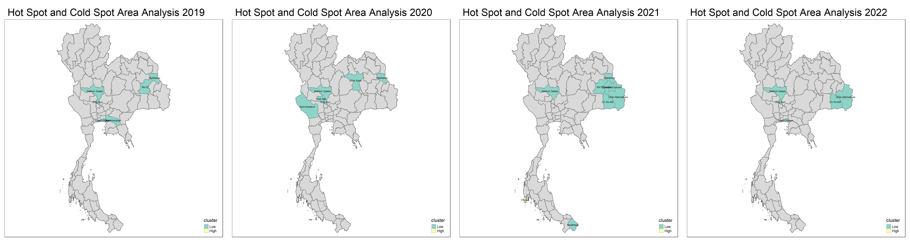
Tip
Figure above reveals the changes of hotspot and cold spot over the year.
3.4 Emerging Hotspot Analysis
We previously already create Spacetime revenue_foreign_st that included the foreign revenue data from 2019-2022
is_spacetime_cube(revenue_foreign_st)[1] TRUE3.4.1 Computing Gi*
Deriving the spatial weights
revenue_foreign_nb <- revenue_foreign_st %>%
activate("geometry") %>%
mutate(nb = include_self(st_contiguity(geometry, snap = 400)),
wt = st_inverse_distance(nb,
geometry,
scale = 1,
alpha = 1),
.before = 1) %>%
set_nbs("nb") %>%
set_wts("wt")We can use these new columns to manually calculate the local Gi* for each location. We can do this by grouping by Year and using local_gstar_perm() of sfdep package. After which, we use unnest() to unnest gi_star column of the newly created gi_starts data.frame.
gi_stars <- revenue_foreign_nb %>%
group_by(year) %>%
mutate(gi_star = local_gstar_perm(sum_rev,
nb,
wt)) %>%
unnest(gi_star)Mann-Kendall test data.frame We can replicate this for each location by using group_by() of dplyr package.
ehsa <- gi_stars %>%
group_by(ADM1_EN) %>%
summarise(mk = list(unclass(
Kendall::MannKendall(gi_star)
)
)) %>%
unnest_wider(mk)3.4.2 Mann-Kendall Test on Gi*
With these Gi* measures we can then evaluate each location for a trend using the Mann-Kendall test. The code chunk below uses Bankok county.
cbg <- gi_stars %>%
ungroup() %>%
filter(ADM1_EN == "Bangkok") %>%
select(ADM1_EN, year, gi_star)Interactive Mann-Kendall Plot
ggplotly(ggplot(data = cbg,
aes(x = year,
y = gi_star)) +
geom_line() +
theme_light())3.4.3 Performing Emerging Hotspot Analysis
Using ehsa We can also sort to show significant emerging hot/cold spots
emerging <- ehsa %>%
arrange(sl, abs(tau)) %>%
slice(1:10)
head(emerging)# A tibble: 6 × 6
ADM1_EN tau sl S D varS
<chr> <dbl> <dbl> <dbl> <dbl> <dbl>
1 Bangkok -0.667 0.308 -4 6.00 8.67
2 Chachoengsao -0.667 0.308 -4 6.00 8.67
3 Chanthaburi -0.667 0.308 -4 6.00 8.67
4 Chon Buri -0.667 0.308 -4 6.00 8.67
5 Lampang 0.667 0.308 4 6.00 8.67
6 Nakhon Pathom -0.667 0.308 -4 6.00 8.67set.seed(1234)
revenue_ehsa <- emerging_hotspot_analysis(
x = revenue_foreign_nb,
.var = "sum_rev",
k = 1,
nsim = 199,
nb_col = "nb",
wt_col = "wt"
)revenue_foreign_ehsa <- THSAB_sf %>%
left_join(revenue_ehsa,
by = join_by(ADM1_EN == location))Visualising the distribution of EHSA classes
ggplot(data = revenue_foreign_ehsa,
aes(x = classification)) +
geom_bar()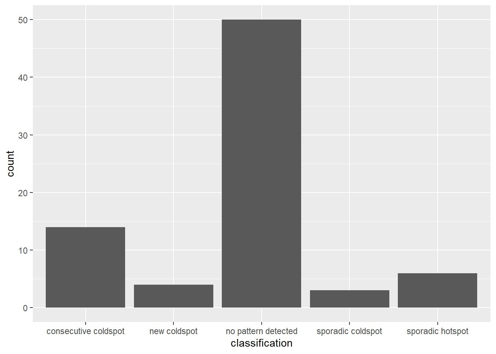
We could see majority of location does not has any pattern
tmap_mode('plot')
revenue_foreign_ehsa_sig <- revenue_foreign_ehsa %>%
filter(p_value < 1)
tm_shape(st_as_sf(revenue_foreign_ehsa)) +
tm_polygons() +
tm_borders(alpha = 0.5) +
tm_text("ADM1_EN", size=0.5) +
tm_shape(st_as_sf(revenue_foreign_ehsa_sig)) +
tm_fill("classification") +
tm_borders(alpha = 0.4) +
tm_text("ADM1_EN", size=0.5)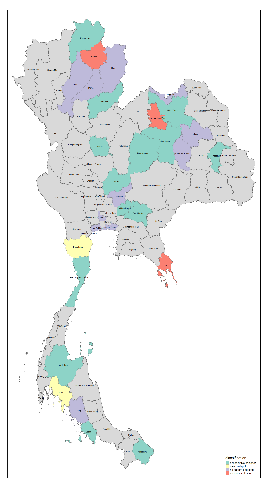
4. Conclusion
The analysis showed there is clearly uneven distribution of Foreign revenue of Thailand Tourism from 2019-2022. The Foreign Revenue Indicator graph showcase the distribution of Foreign Revenue and its sudden changes in the period from 2019-2022. The orginal clustering using bclust has show some potential clustering that needed further attention
The computation of Global Moran’s I show that we are not able to reject the null hypothesis but we do see the changes of this results over the years
The calculation of Local Moran’s I and plotting LISA map show us the hotspots and coldspots and their movement over the year. It is interesting however that some of the coldspots seem to be consist of some area over the years
Lastly the Emerging hotspots analysis showcase some of the emerging hotspots and coldspots of interest over the year